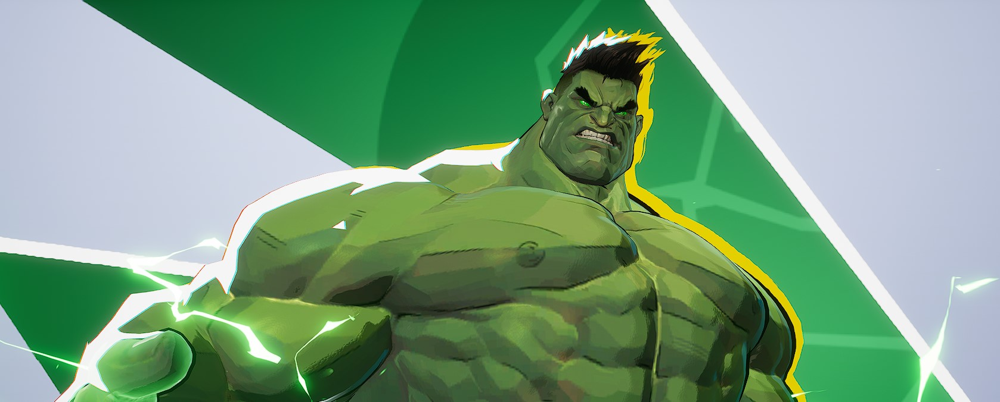

The Hulk (Marvel)
In the Marvel Universe, Bruce Banner is hit by a blast of gamma radiation and turns into the Hulk — a massive, green rage monster. While that makes for cool storytelling, it’s not scientifically possible. Gamma radiation in real life would likely destroy cells and increase cancer risk, not trigger a transformation into a superhuman being. There’s no biological reason why radiation would lead to increased strength or healing.
Spider-Man
Peter Parker becomes Spider-Man after being bitten by a radioactive spider. The idea is that the spider's genes mixed with radiation to give him powers. Again, this just isn’t how mutation works. Radiation can’t blend animal DNA with human DNA, and it doesn’t give people extra agility or wall-climbing skills. Realistically, a radioactive bite would be more likely to make someone ill.
Fallout Series
Fallout is filled with radiation zones, mutated animals, and ghoulish humans that glow or live for hundreds of years. While the aesthetic is awesome, it’s all fiction. Radiation doesn’t cause rapid, visible mutation like this. Real-life exposure leads to cancer, organ damage, or death — not super mutants.
Metro / STALKER
These post-apocalyptic games show radiation turning people into horrific creatures or giving them supernatural abilities. It’s a dramatic way to build suspense and danger, but in reality, mutations take generations — and rarely lead to anything “new.” Sudden transformation just isn’t scientifically possible.
Teenage Mutant Ninja Turtles
Four baby turtles fall into radioactive slime and become pizza-eating martial artists. It’s a classic cartoon, but totally disconnected from science. Radiation doesn’t rewrite genetics into human-animal hybrids. In reality, those turtles would have been more likely to suffer internal damage, not gain ninja skills.
Pop culture might not be accurate, but it shapes how people think about science. That’s why it’s important to know the difference between entertainment and real-world biology — which you’ll see more of on the next page.